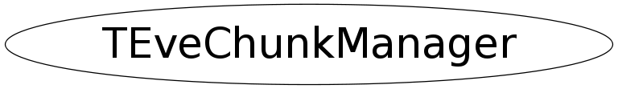

class TEveChunkManager
Vector-like container with chunked memory allocation. Allocation chunk can accommodate fN atoms of byte-size fS each. The chunks themselves are TArrayCs and are stored in a std::vector<TArrayC*>. Holes in the structure are not supported, neither is removal of atoms. The structure can be Refit() to occupy a single contiguous array.
Function Members (Methods)
public:
| TEveChunkManager() | |
| TEveChunkManager(Int_t atom_size, Int_t chunk_size) | |
| virtual | ~TEveChunkManager() |
| Char_t* | Atom(Int_t idx) const |
| Int_t | Capacity() const |
| Char_t* | Chunk(Int_t chk) const |
| static TClass* | Class() |
| virtual TClass* | IsA() const |
| Int_t | N() const |
| Int_t | NAtoms(Int_t chk) const |
| Char_t* | NewAtom() |
| Char_t* | NewChunk() |
| void | Refit() |
| void | Reset(Int_t atom_size, Int_t chunk_size) |
| Int_t | S() const |
| virtual void | ShowMembers(TMemberInspector& insp) |
| Int_t | Size() const |
| virtual void | Streamer(TBuffer& b) |
| void | StreamerNVirtual(TBuffer& b) |
| Int_t | VecSize() const |
protected:
| void | ReleaseChunks() |
private:
| TEveChunkManager(const TEveChunkManager&) | |
| TEveChunkManager& | operator=(const TEveChunkManager&) |
Class Charts
{kind=link}
{kind=link}
{kind=link}
{kind=link}

Function documentation
void Reset(Int_t atom_size, Int_t chunk_size)
Empty the container and reset it with given atom and chunk sizes.
TEveChunkManager(const TEveChunkManager& )
TEveChunkManager& operator=(const TEveChunkManager& )